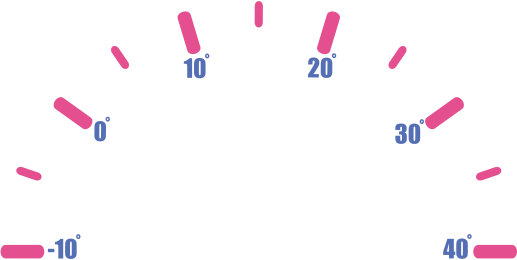

<article id="body">
    <section class="cont">
        <section>
            
        </section>
        <section class="speedmeter__hand"></section>
    </section>
    <section class="cont">
        <p class="current-temp"></p>
        <p class="temp-levels"><span id="downTemp"></span><span id="upTemp"></span></p>
    </section>
    <section class="cont svg-cont">
        <svg>
            <circle id="holder" fill="none" /><!--holder-->
            <circle id="gold" fill="none" /><!--gold-->
            <circle id="gold-pluk" fill="none" /><!--holder for gold-->  
            <circle id="dark" fill="none" /><!--dark-->
            <circle id="dark-pluk" fill="none" /><!--holder for dark-->
        </svg>
        
        <div class="cont-sun--moon">
            <div>
                <i class="bi bi-sun-fill"></i>
                <i style="display: none;" class="bi bi-moon-stars-fill"></i>
            </div>
        </div>
        <section class="svg__hr">
            <span>HORIZON</span>
        </section>
        <section class="svg--grid">
            <div>
                <i class="bi bi-sunrise"></i>
                <small>Sunrise</small>
                <b id="sunrise"><span></span>:<span></span></b>
            </div>
                
            <div>
                <i class="bi bi-sunset"></i>
                <small>Sunset</small>
                <b id="sunset"><span></span>:<span></span></b>
            </div>
        </section>
    </section>
    <br><br>
</article>